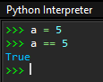

Opérations, comparaisons, expression
Opérateurs arithmétiques sur les nombres
Les opérations arithmétiques usuelles sont effectuées sur des nombres de types int ou float :
| opérateur | notation |
|---|---|
| addition | a + b |
| soustraction | a - b |
| multiplication | a * b |
| puissance | a**b |
| divisions décimale | a / b |
PEP 8
Entourer les opérateurs mathématiques (+, -, /, *) d'un espace avant et d'un espace après.
À noter :
Si
et si l'un deaetbsont deux variables toutes les deux de typeintalors le résultat d'une opération entre les deux est de typeint, sauf pour la division qui est toujours de typefloatmême si le résultat est un entier :aou debest de typefloatalors le résultat est toujours de typefloat.La racine carrée d’un nombre peut s'obtenir avec :
a**0.51.L’ordre des priorités mathématiques est respecté.
Il est possible d'affecter une valeur à une variable qui dépend de son ancienne valeur, par exemple l’augmenter d’une quantité donnée (on dit incrémenter)2.
PEP 8
Dans ce cas particuliers, on peut omettre les espaces autour de la multiplication (*) pour montrer la priorité sur l'addition et améliorer la lisibilité de la formule.
Des raccourcis d’écriture existent pour aller plus vite (mais attention aux erreurs en les utilisant !).
a += 1signifiea = a + 1;a += bsignifiea = a + b; eta *= 2signifiea = a * 2.
Division entière (ou division euclidienne)
L'opérateur de division entière // et l’opération modulo % utilisés avec des entiers (de type int) donnent respectivement le quotient et le reste d'une division euclidienne : si a et b sont des entiers tels que \(a = b \times q + r\), alors a // b donne \(q\) et a % b donne \(r\)3.
| opérateur | notation |
|---|---|
| quotient | a // b |
| reste | a % b |


Par exemple, le quotient et le reste de la division entière de \(17\) par \(5\) sont \(3\) et \(2\) respectivement (car \(17 = 3 \times 5 + 2\)) :
L'opérateur modulo, %, qui donne le reste d'une division entière, est très utile pour déterminer si un nombre est divisible par un autre nombre, dans ce cas le reste est égal à zéro :
Opérateurs sur les chaines de caractères
Les textes ou chaines des caractères, de type str (abréviation de string), sont définis entre une paire de guillemets (") ou d’apostrophes (')4.
-
L'opérateur d'addition «
6+» concatène (assemble) deux chaînes de caractères. -
L'opérateur de multiplication «
*» entre un nombre entier et une chaîne de caractères duplique (répète) plusieurs fois une chaîne de caractères.
La fonction len() donne le nombre de caractère d’une chaîne (y compris les espaces et les signes de ponctuation).
Chaque caractère d’une chaîne de caractères ch a une position qui va de 0 à len(ch) - 1.
ch[0]permet d'accéder au premier caractère en position0de la chaînech,ch[1]au second caractère en position1,- ...
ch[i]au caractère eniième position,- ...
ch[len(ch) - 1]au dernier caractère.
 Les positions sont comptées en commençant à la position
Les positions sont comptées en commençant à la position 0, le premier caractère est ch[0] et non pas ch[1] !
- De même, en partant de la fin,
ch[-1]permet d'accéder au dernier caractère,ch[-2]à l’avant dernier, etc.
PEP 8
Pas d'espace autour d'un deux-points (:).
- Enfin
ch[i:j]permet d'obtenir la sous-chaîne de tous les caractères entre les positionsi(inclus) etj(exclus), appelée une tranche.
Les mots-clés in et not in permettent de vérifier l’appartenance, ou pas, d’une sous-chaine dans une chaine :
| fonction | description | exemple |
|---|---|---|
.index('c') |
trouve l'index du premier caractère "c" dans une chaîne. |
>>> chaine = 'aaabbbccc'>>> chaine.index('b')3 |
.find('sc') |
cherche la position d'une sous-chaîne sc dans la chaîne. |
>>> chaine.find('bc')5 |
.count('sc') |
compte le nombre de sous-chaînes sc dans la chaîne. |
>>> chaine.count('bc')1 |
.lower('sc') |
convertit une chaîne en minuscules. | >>> 'ABCdef'.lower()'abcdef' |
.upper('sc') |
convertit une chaîne en majuscules. | >>> 'ABCdef'.upper()'ABCDEF' |
.replace('old', 'new') |
remplace tous les caractères old par new dans la chaîne. |
>>> 'aaabbbccc'.replace('c', 'e')'aaabbbeee' |
Opérateurs de comparaison
Les opérations de comparaison usuelles permettent de comparer des valeurs de même type entre elles. Le résultat est toujours un booléen (de type bool) égal à True ou False8 .
PEP 8
Entourer les opérateurs de comparaison (==, !=, >=, etc.) d'un espace avant et d'un espace après.
| opérateur | notation |
|---|---|
| = | a == b |
| ≠ | a != b |
| < | a < b |
| ≤ | a <= b |
| > | a > b |
| ≥ | a >= b |
Une erreur courante consiste à confondre l'opérateur de comparaison == pour vérifier si deux valeurs sont égales avec l'affectation qui utilise le signe = !
Il est possible de combiner les comparaisons, par exemple pour vérifier si a est compris entre 2 et 6 :
entre 7 et 8 :
mais ce n'est pas recommandé car c'est en fait une combinaison de plusieurs comparaisons, ce qui peut donner des hérésies mathématiques :
Les chaines de caractères, quant à elles, sont comparées en ordre lexicographique, c’est-à-dire caractère par caractère comme l'ordre des mots dans un dictionnaire : on commence par comparer le premier caractère de chaque chaîne, puis en cas d’égalité le deuxième de chaque, et ainsi de suite jusqu'à trouver un caractère qui est différent de l'autre10.
Attention aux majuscules (elles sont "avant" toutes les minuscules) :
et aux nombres écrits dans des chaînes de caractères :
Les nombres de type int ou float peuvent être comparés entre eux même s'ils sont de types différents :
Mais pas les nombres avec les chaines de caractères :
>>> 7 == "7"
False
>>> 7 < '8'
Traceback (most recent call last):
File "<interactive input>", line 1, in <module>
TypeError: '<' not supported between instances of 'int' and 'str'
Attention aux égalités entre nombres de type float qui ne sont pas toujours encodés de façon exacte11 :
Opérateurs logiques (ou booléens)
Les opérations logiques peuvent être effectuées sur des booléens (type bool). Le résultat est un booléen égal à True ou False.
| opérateur | notation | description | priorité |
|---|---|---|---|
Négation de a |
not a |
True si a est False, False sinon |
1 |
a et b (conjonction) |
a and b |
True si a et b sont True tous les deux, False sinon |
2 |
a ou b (disjonction) |
a or b |
True si a ou b (ou les deux) est True, False sinon |
3 |
(a et b sont des booléens).
Comme pour les opérations mathématiques, les opérations logiques suivent des règles de priorité :
- Négation (
not), - Conjonction (
and), - Disjonction (
or).
a or not b and c est équivalent à a or ((not b) and c) mais en pratique les parenthèses sont plus lisibles.
Expressions
Cours
Une expression est un calcul d’opérations et de comparaisons dont l'évaluation donne une valeur.
Attention à ne pas confondre une expression avec une instruction dont l'exécution fait quelque chose.
Exemples :
2*a + 5est une expression, elle a une valeur (qui dépend de la valeur dea).a == 5est une expression booléenne, elle vautTrueouFalse.a = 5n’est pas une expression, c’est une instruction qui affecte de la valeur 5 à la variablea.

À noter:
Quand une affectation est saisie dans la console Python, par exemple
>>> a = 5, rien n’est affiché par l'interpréteur car ce n'est pas une expression.Quand une expression est saisie dans la console Python, par exemple
>>> a == 5, elle est évaluée par l’interpréteur et le résultat est affiché en dessous.
Puisqu'elle a une valeur, une expression peut être affectée à une variable :
b = a**2 est une affectation de la valeur de l’expression a**2 (le carré de a) à la variable b.
Exercice corrigé
La valeur d'une variable annee de type int est donnée, par exemple >>> annee = 2023.
Écrire dans l'interpréteur une expression booléenne, qui vaut True si annee est une année bissextile ou False sinon.
« Depuis l'ajustement du calendrier grégorien, l'année sera bissextile (elle aura 366 jours) seulement si elle respecte l'un des deux critères suivants :
- C1 : l'année est divisible par 4 sans être divisible par 100 (cas des années qui ne sont pas des multiples de 100) ;
- C2 : l'année est divisible par 400 (cas des années multiples de 100).
Si une année ne respecte ni le critère C1 ni le critère C2, l'année n'est pas bissextile ». Source: https://fr.wikipedia.org/wiki/Année_bissextile.
Réponse
Avant d'écrire cette expression on peut se poser quelques questions :
- Comment savoir si un nombre est divisible par un autre ? Il suffit de vérifier si le reste de la division entière est égal à zéro ou pas. Par exemple 2023 n'est pas divisible par 4 car le reste de la division entière de 2023 par 4 est 3 : Par contre 2024 est divisible par 4 car le reste de la division entière de 2024 par 4 est bien 0 :
-
On peut traduire directement en Python chaque condition C1 et C2 :
C1 : l'année est divisible par 4 sans être divisible par 100 (cas des années qui ne sont pas des multiples de 100) ;
>>> annee % 4 == 0 and annee % 100 != 0C2 : l'année est divisible par 400 (cas des années multiples de 100).
>>> annee % 400 == 0 -
la dernière clause indique qu'une année n'est pas bissextile si les conditions C1 et C2 sont toutes les deux fausses. Il faut donc comprendre qu'une année est bissextile si l'une des conditions C1 ou C2 est vraie (ou les deux en même temps).
Traduit en Python, on obtient l'expression suivante que l'on peut tester dans la console.
On pourrait se passer des parenthèses et utiliser les règles de priorités des opérateurs booléens :
annee % 4 == 0 and annee % 100 != 0 or annee % 400 == 0, mais en pratique ce n'est pas recommandé.
-
En mathématique \(\sqrt {a} = a ^ {1 \over 2}\). ↩
-
Noter dans cet exemple la différence entre variable informatique et mathématique, et la signification du signe « = ». En mathématique \(a = 2*a + 1\) est une équation dont l’inconnue est \(a\) (elle peut être facilement résolue pour trouver la solution \(a = -1\)). En informatique, c’est l'affection du résultat de
2*a + 1à la variableaqui prend une nouvelle valeur (même si \(a \neq -1\)). ↩↩ -
Vrai pour des entiers positifs. Attention aux surprises avec des nombres relatifs ! Les résultats sont différents entre langages/systèmes informatiques. En Python on peut tester
7 // -5et-17 // 5qui donnent tous les deux-4mais17 % -5donne-3alors que-17 % 5donne3. ↩ -
Pouvoir utiliser les apostrophes ou les guillemets offre un énorme avantage : les guillemets permettent d'écrire une chaîne qui contient des apostrophes et vis-versa, par exemple
"J'aime Python"ou'Il dit "hello".'. ↩ -
Attention : les opérateurs
+et*se comportent différemment s'il s'agit d'entiers ou de chaînes de caractères :2 + 2est une addition alors que'2' + '2'est une concaténation,2 * 3est une multiplication alors que'2' * 3est une duplication. ↩ -
« Hello world » (traduit littéralement en français par « Bonjour le monde ») sont les mots traditionnellement écrits par un programme informatique simple dont le but est de faire la démonstration rapide de son exécution sans erreur. Source : https://fr.wikipedia.org/wiki/Hello_world ↩
-
Une méthode est un type de fonction particulier propre aux langages orientés objet. Remarquer la construction
nom_variable.nom_methode()dans ces cas différente denom_fonction(nom_variable)par exemplelen('abc'). ↩ -
TrueetFalse(etNone) sont les rares mots en Python qui s’écrivent avec une majuscule.TRUEoutruene sont pas acceptés. ↩ -
Préférer
isetis notà==et!=pour comparer àNone, par exemplea is not Noneplutôt quea != None. ↩ -
Les comparaisons entre chaînes de caractère se font en comparant le point de code Unicode de chaque caractère. Il est donné par la fonction
ord()(la fonctionchr()fait ‘inverse ). Par exemple,ord('A')vaut65etord('a')vaut97donc'A' < 'a'est vrai. ↩ -
Les nombres de type
floatsont encodés par des fractions binaires qui "approchent" leur valeur le plus précisément possible sans être toujours parfaitement exactes. Par exemple le nombre \(0,1\) est représenté par la valeur0.1000000000000000055511151231257827021181583404541015625en Python (format(0.1,'.55f')permet d'afficher toutes les décimales). Une particularité de Python est de ne pas limiter l’encodage desint, par exemple comparer>>> 2*1000avec>>> 2.**1000dans la console. ↩